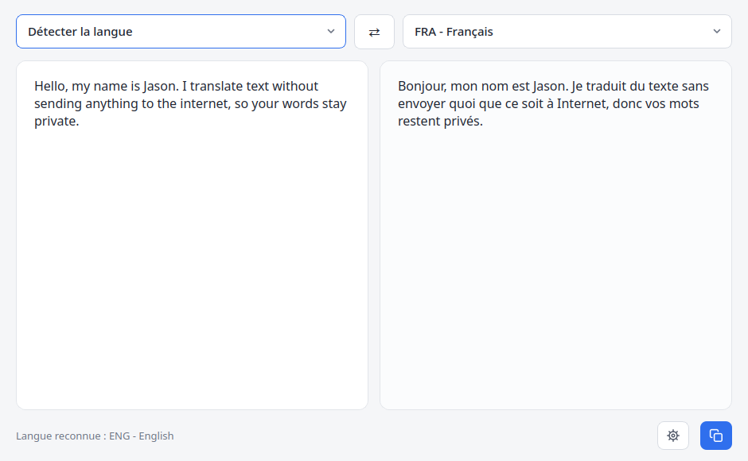
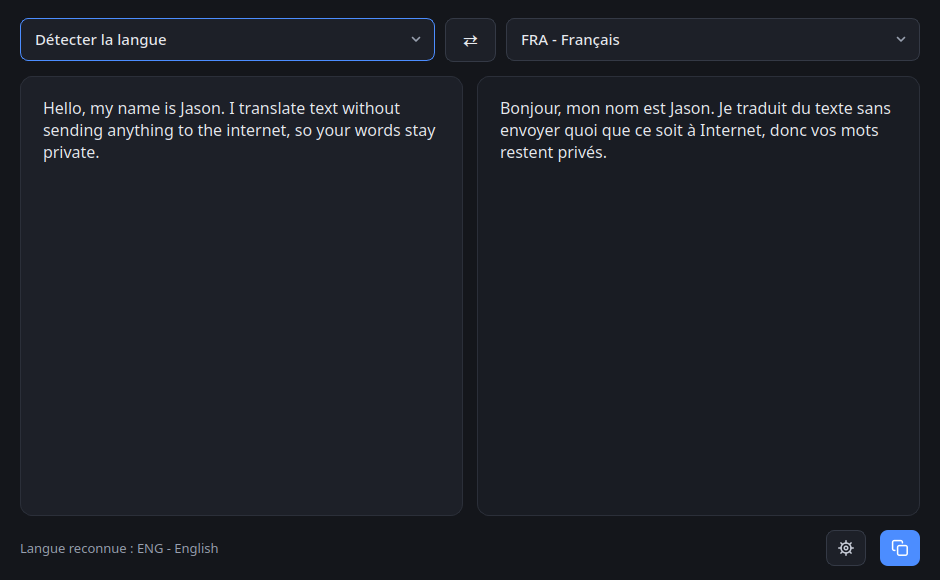
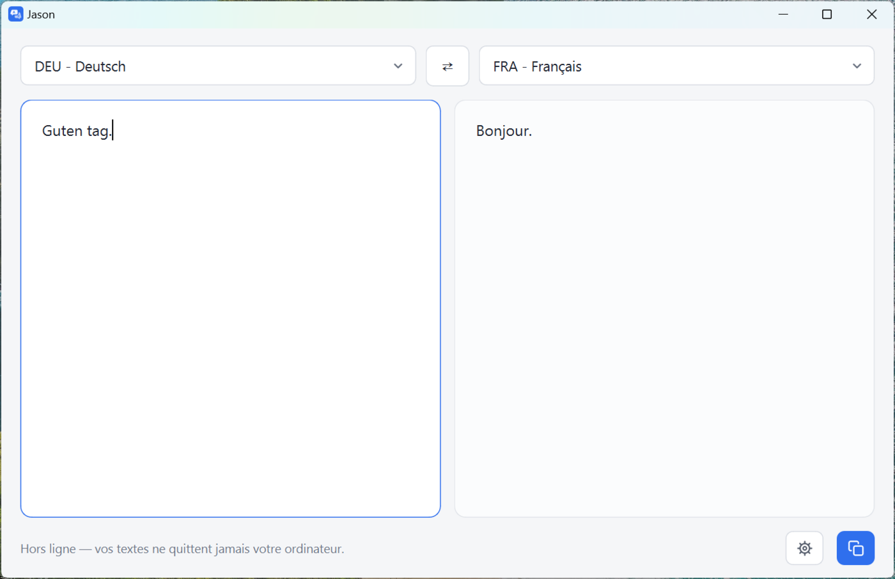

Jason
Traduisez sans connexion, sans que rien ne quitte votre ordinateur.
Jason est un traducteur qui fonctionne entièrement sur votre machine. Aucun compte, aucune publicité, aucun serveur : le texte que vous écrivez n'est envoyé nulle part.
Télécharger pour Windows Télécharger pour Linux
Windows : installateur d'environ 300 Mo, aucun droit administrateur
nécessaire.
Linux : AppImage d'environ 520 Mo, à rendre exécutable avant le premier
lancement.
toutes
les versions



Il fonctionne hors ligne
Dans un train, un avion, une zone sans réseau, ou un pays sans forfait de données. Une fois vos langues installées, Internet n'est plus nécessaire.
Vos textes restent chez vous
Les traducteurs en ligne envoient chaque phrase saisie à un serveur distant. Un texte personnel, médical ou professionnel y passe comme le reste. Avec Jason, la traduction est calculée sur votre ordinateur.
Rien à créer, rien à accepter
Pas de compte, pas d'abonnement, pas de publicité, pas de bandeau de consentement.
Comment ça marche
-
Installez Jason
Un installateur sous Windows, un fichier unique à double-cliquer sous Linux. Rien d'autre à installer.
-
Choisissez vos langues
Au premier lancement, Jason ouvre la liste des langues : téléchargez celles dont vous avez besoin, parmi cinquante. C'est le seul moment où une connexion est nécessaire.
-
Écrivez à gauche, lisez à droite
La langue de votre texte est reconnue toute seule. Vous pouvez ajouter ou supprimer des langues à tout moment depuis les Paramètres.
Ce que Jason traduit mal
Autant le dire tout de suite : Jason traduit moins bien que Google Traduction ou DeepL. Ce n'est pas un défaut de jeunesse, c'est le prix de ce qu'il promet. Pour tenir sur un ordinateur ordinaire et fonctionner sans connexion, chaque langue pèse environ 170 Mo. Les services en ligne, eux, font tourner des modèles bien plus gros dans des centres de données. À cette taille-là, il n'y a pas de miracle.
Tout passe par l'anglais
Pour traduire du français vers le japonais, Jason traduit d'abord vers l'anglais, puis de l'anglais vers le japonais. C'est ce qui lui évite d'embarquer un modèle par paire de langues — il en faudrait près de deux mille cinq cents — mais chaque étape ajoute ses propres erreurs, et elles s'additionnent.
Certaines langues souffrent bien plus que d'autres
L'espagnol, l'italien ou le portugais partagent avec le français l'essentiel de leur vocabulaire et de leur grammaire : même un petit modèle s'en sort honorablement.
L'arabe, le japonais, le russe ou le chinois fonctionnent tout autrement — ordre des mots différent, déclinaisons, sujets sous-entendus, écriture sans espaces ou de droite à gauche. Il y a beaucoup plus à apprendre, et beaucoup moins de textes déjà traduits pour l'apprendre. Sur ces langues, attendez-vous à saisir le sens général, pas à obtenir une phrase correcte.
La démonstration est plus haut sur cette page
Dans la capture d'écran, Jason écrit « Je traduit du texte » au lieu de « Je traduis ». Et c'est de l'anglais vers le français, la paire la plus facile qui soit. Cette capture n'a pas été retouchée : elle montre ce que le logiciel produit réellement.
À quoi ça sert, alors ?
À comprendre. Un mode d'emploi, un message, un article, un panneau : Jason vous en donne le sens, sans connexion et sans que le texte parte ailleurs. Pour un contrat, un document médical, une lettre officielle, ou tout texte que quelqu'un d'autre va lire, prenez un traducteur en ligne — ou un traducteur humain.
Pourquoi « Jason » ?
Jason ne traduit pas tout seul : sous le capot, le travail est fait par un moteur libre appelé Argos Translate. Ses auteurs n'expliquent nulle part d'où vient ce nom — ni leur dépôt, ni leur site n'en disent un mot. Mais dans la mythologie grecque, Argos est le charpentier qui construisit l'Argo, le navire de Jason, et à qui le navire doit son nom.
Le clin d'œil était trop beau pour être ignoré : Argos bâtit le navire, Jason le mène à bon port. Le moteur fait la traduction ; ce logiciel en fait quelque chose d'utilisable par n'importe qui. Le nom est donc un hommage assumé — pas une filiation revendiquée par les auteurs d'Argos Translate.
Car un navire seul ne va nulle part. Il lui faut quelqu'un pour tenir la barre : rendre abordable une mécanique qui existait déjà, mais que personne n'avait envie d'affronter.
L'histoire, en quelques lignes
Jason est un héros grec, fils d'Éson, roi d'Iolcos. Son oncle Pélias s'empare du trône qui lui revient, et promet de le lui rendre à une condition : rapporter la Toison d'or, la fourrure d'un bélier ailé, suspendue à un arbre au bout du monde connu et gardée par un dragon qui ne dort jamais.
Jason fait construire un navire, l'Argo, et réunit un équipage de héros — les Argonautes, parmi lesquels Orphée et Héraclès. Après une longue traversée semée d'épreuves, il obtient la Toison avec l'aide de Médée, magicienne et fille du roi qui la gardait, et rentre chez lui avec.
Qui a construit Jason
François Guerin — l'architecte : l'idée, les choix techniques, le dessin de l'interface, et les essais jusqu'à ce que tout tienne debout.
Claude (Anthropic) — le maçon : l'écriture du code, d'après les plans de l'architecte.
Remerciements
Jason ne réinvente rien. Il repose sur des projets libres et sur leurs contributeurs, souvent anonymes, sans qui rien de tout cela ne serait possible.
Il traduit grâce à Argos Translate et CTranslate2, reconnaît les langues avec Lingua, découpe les phrases avec Stanza, et affiche tout cela avec Qt et PySide6, en Python.
Pour arriver jusqu'à vous, il est empaqueté avec PyInstaller, puis distribué en AppImage sous Linux et avec Inno Setup sous Windows.